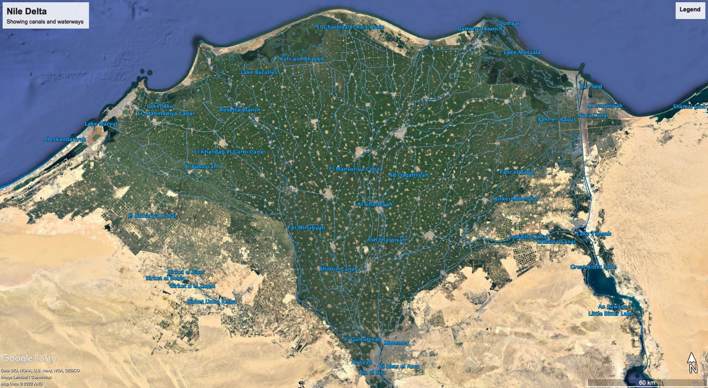
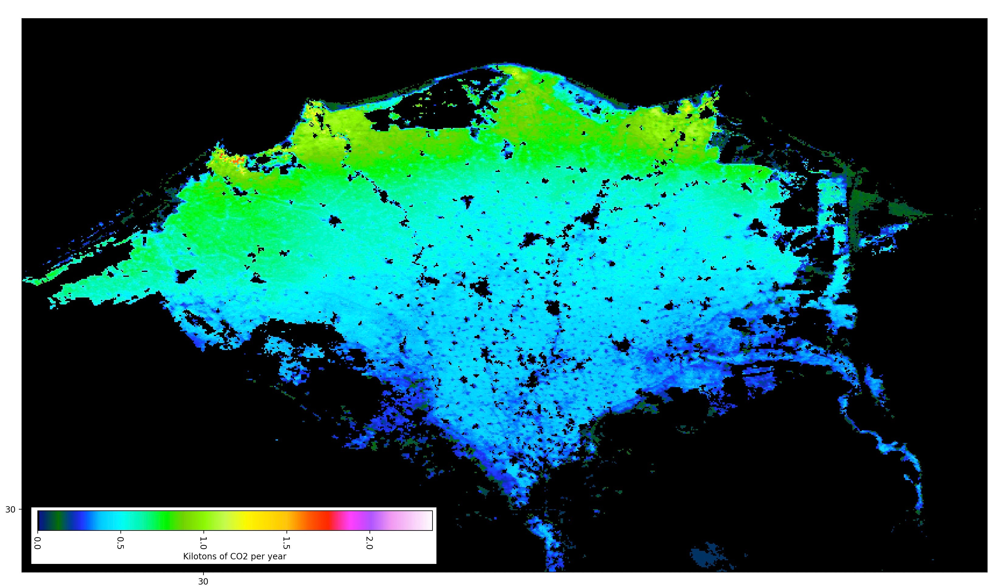

I apologize for skipping a week, but I hope many of you were on a well-deserved holiday/spring break over Memorial Day. My lame excuse is the ARPA-E Summit, the first in-person conference I’ve attended since COVID. I’ve been to all but one of these epic events since 2010. For me, it’s a reliable venue for both catching up with the “alumni” group and tracking clever approaches to energy, emissions, and funding. I also had the pleasure of meeting a few of my readers face to face! The consequence was an unexpected increase in my personal energy level (the Chinese call it “qi”). Thanks to all of you who brought me that overdue boost.
Wherever I could, I brought up the theme, “Low-cost desalination of seawater is our last, best hope to achieve net-zero”, as outlined in previous installments. The median response from scientists was, “That makes sense. It sounds like a good idea,” which was surprising given the level of technical expertise and skepticism—this is not a group known for “happy talk”.
Unsurprisingly, the reactions from the few investors I spoke with were less encouraging.
I’ve spent the better part of the last decade reviewing clever ideas for one investor or another, so I understand their sentiment! There are three unavoidable downsides to desalination from an investment perspective. First, desalination is not a young sexy technology—it’s been around for at least a hundred years. Second, the energy required to desalinate seawater is considerable, so simply getting to breakeven on energy costs doesn’t create a good investment thesis [but then again, if you do the math correctly, no carbon removal technology does!] Third, even though nuclear is the obvious answer to abundant, always-on, low-carbon energy, the regulatory hurdles that engineers must overcome are viewed as too extreme.
Let us address these criticisms individually.
Desalination is an old idea.
Undoubtedly true. That also means it’s ripe for a transformational innovation step that takes it from being niche to ubiquitous! Remember Henry Ford 1 —he didn’t invent anything. He just built a full-scale manufacturing system to hit a cost target based on an old idea. For developing a desalination strategy, the risk of a cost overrun is small, but it will still require hardnosed engineering.
Any investment that only achieves breakeven is unattractive.
From a financial standpoint, that’s pretty obvious. Perhaps I haven’t said it often enough—Without a robust carbon market, desalination for irrigation is the only negative-emission (aka “absorption”) technology that can break even in the long run! The math fails for every other technology for two simple reasons. First, because everything costs something, the technology must create a product worth at least as much as the cost. Second, suppose you have to pay for the minimum theoretical energy needed to concentrate CO2 from the atmosphere. In that case, the energy cost alone is worth more than all applications of concentrated CO2. Desalination takes less energy, and you don’t have to pay for sunlight used in agriculture.
It’s not just my opinion. It’s broadly (if implicitly) shared: Follow the evolution of acronyms in the space. First, there was mere “carbon capture”, which provided the foundation for an early ARPA-E program, acronamed “IMPACCT” 2 with the stylistic double C standing for “carbon capture”. But, what would we do with billions of tons of CO2, 3 once they’re removed from the atmosphere? Consequently, “carbon capture” became CCS and then CCUS for Carbon Capture with (Utilization and) Storage. There are specific instances where this strategy can effectively reduce emissions, for example, in post-combustion (but pre-dilution) carbon capture, but it still adds cost without creating value.
CCUS doesn’t address the elephant in the room, the emissions we’ve already released and diluted into the atmosphere. So, prodded by IPCC, 4 CCUS became ‘BECCS’, standing for BioEnergy with Carbon Capture and Storage. BECCS is a specific case of CCUS, where the ‘U’ is simply bioenergy, and natural photosynthesis is used to absorb CO2. The ‘S’ is below-ground carbon storage, either soil organic carbon or captured emissions.
At the Summit, I learned that the acronyms had evolved yet again. The latest one is BiCRS (pronounced “bikers”), which stands for Biological Carbon Removal and Storage. Gawd.
What the heck happened to “utility”??! In ten short years, while our emissions have accelerated, these banal academic committees now recommend that taxpayers spend money to grow stuff and then bury it so that it doesn’t decompose and release CO2. Maybe we should all go back to non -biodegradable plastic! 5
This reflects a tactical disconnect between the physical scientists (“We must take CO2 out of the atmosphere!”), and the economists (“The ‘invisible hand’ is a cure-all!”). When the scientists dominate the discussion, carbon removal efficiency is paramount, while when the economists have the floor, the economic burden is essential. Of course, any solution has to balance both factors, and both camps face strict mathematical limits. But neither scientists nor economists acknowledge that the endgame must be one of two things: (1) The price of carbon must go to $0, 6 or (2) any “carbon tax” must be earmarked explicitly for (and balanced with) carbon capture technologies. Instead of facing this eventuality, economists argue amongst themselves whether carbon should be priced at $20 or $200 per ton and treat it as a fixed cost that never sunsets. These numbers (usually a higher value) then find their way into the spreadsheets of scientists seeking to “monetize” their technology.
I hate to break the spell of the Illuminati, but it’s all BS.
Even if practical, a permanent global tax providing an invisible benefit to taxpayers is dead-on-arrival. For example, the Golden State of California has a cap-and-trade system for CO2 that generates $3.6 billion annually. But it doesn't spend a single dime on CCUS, BECCS, or BiCRS. Instead, it uses the cash to support “clean” showpieces like high-speed rail . I know no planned or operational carbon removal operation that any government pays for. Such expenditures are bound to be unpopular among appropriators!
NEVERTHELESS…
This picture reveals an opportunity for desalination-based carbon capture. First, there’s net carbon retained after irrigation commences. That’s plainly obvious. But we must do the math. How much carbon is removed per acre-foot of irrigation? The scientific answer is (as usual), “It depends.” This answer naturally throws the model makers into high gear: Which crop is optimal? Do we count the carbon used to make fertilizers and run combines? And most importantly, how can we measure (and thereby monetize) the effect of incentivizing farmers? These questions are all potentially relevant, but they’re not crucial unless the numbers are in a reasonable range.
For desalination, we can start to answer these questions using publicly available satellite data.
Let’s look at the oldest and most productive irrigation system globally, the Nile Delta.


The shaded area is about 8.3 million acres (most of the agricultural land in Egypt) and is irrigated by 40,000 km of canals. It provides a good base case for what irrigation of the desert might provide in terms of carbon absorption potential. Irrigation of this land uses a little less than 3 feet of water per acre 7 . If a year-round crop such as sugarcane is used, gross absorption is 35 tons of CO2 per acre with 25 tons harvested, leaving 10 tons assimilated into biomass. 8
This math works out nicely for discussion purposes: An acre-foot of irrigation water in the Egyptian desert results in the absorption of approximately three tons of CO2 that is not harvested. In more advanced systems, such as the drip irrigation systems prevalent in Israel, water efficiency can increase by about a factor of 2.
So, here’s a back of the envelope calculation:
-
Earlier 9 , I described how desalination is achievable with current technologies at an energy cost of $178 per acre-foot of water, at an electricity cost of 0.04/kWh. Let’s assume that the farmer pays $200 for a yearly cost of $600 (= 3 x $200) for water.
-
Sugar cane production is valued at $500 per acre in Egypt. 10
-
Carbon credits in Europe are worth >$90 per ton. Let’s assume that the farmer can justify half of the net absorption as a credit, so that’s an additional $450 (=$90 x 10 ÷ 2) per acre for a profit of $350 ($500 + $450 - $600) per acre of desert land.
-
Cane sugar is about half of the harvest by dry weight. So an additional 12.5 tons of biomass (known as “bagasse”) is harvested. Much of it is burned in Brazil, but it could be plowed under for soil enrichment or buried. This would bring the total profit to $912.50 per acre (=$500 + $90 x 22.5 ÷ 2 - $600), nearly double that of presently cultivated desert.
This calculation is crude, and markets will follow supply and demand, so this edge scenario is unlikely to play out as written at scale. Nevertheless, the estimate permits ample headroom for added costs and potentially attractive margins, even without optimization. With optimization, it will only improve.
Today, carbon credits for agricultural practices are mostly offsets (what I’ve called in previous installments “reverse carbon ransom payments”). They’re aimed at rewarding farmers for adopting farming practices that reduce emissions. The value of desert irrigation would be in an entirely different class—the carbon would be removed from the atmosphere and put to good use.
Nuclear is a regulatory showstopper.
While at the Summit (and from other conversations), it occurred to me that other technologies may also pencil out as a source of carbon-free energy. Nuclear may be compact, abundant, carbon-free, and always-on. But, intermittent renewables with storage, particularly as the cost of grid-scale solar comes down, can make sense. According to Carbon Brief: 11
In the best locations and with access to the most favourable policy support and finance, the IEA says the solar can now generate electricity “at or below” $20 per megawatt hour (MWh)…. [N]ew utility-scale solar projects now cost $30-60/MWh in Europe and the US and just $20-40/MWh in China and India, where “revenue support mechanisms” such as guaranteed prices are in place.
If confirmed in practice, at $20 per MWh, the energy cost of desalination is less than $100 per acre-foot. At that price point, it would support cane farming in Egypt without relying on carbon markets for income. Of course, a complete desalination system powered by solar electricity would need to be engineered to tolerate intermittency, either by design or using storage.
Another option would be to employ floating offshore wind, which could provide an alternative energy source at night. Cost estimates 12 are significantly higher, $80 per MWh, but it’s something to consider.
Switching energy supply from nuclear heat to solar photons or wind increases the engineering complexity and system cost, but running the system would avoid the inevitable delays associated with nuclear Luddites.
The bottom line.
Desalination continues to pencil out as an investment from both a capitalist and a societal perspective. It doesn’t have to be nuclear-powered. It just needs hardnosed engineering to realize its potential. Let’s go!
A tip of the hat to Mark Hartney, one of ARPA-E’s founding Program Directors, for reliably creating memorable acronames! IMPACCT stands for Innovative Materials and Processes for Advanced Carbon Capture Technologies. You can find a complete description of the objectives of this seminal program here .
To visualize a billion tons of CO2, imagine a cube of dry ice covering 25 square miles. If you’ve been to San Francisco, that’s 7 miles on a side, and the cube would reach over 13,000 feet in the air, more than ten times the height of the Salesforce Tower. If you’re more familiar with Manhattan, imagine a block sitting on every square inch of the Borough and reaching 15 times the new World Trade Center tower height. The bottom line is it’s a lot of material to deal with, and humans add about 50 times this amount every year.
It’s not a paradigm shift to invoke biological carbon capture as a strategy. But BECCS became the go-to technology after the IPCC released a Special Report entitled “ Carbon Dioxide Capture & Storage ” in 2005, immediately before the Fourth Assessment Report was released in 2007.
Molle et al., “Irrigation Efficiency and the Nile Delta Water Balance”, International Water Management Institute, downloaded here on 6/1/22.
Borak, B., Ort, D. R., and Burbaum, J. J., “Energy and Carbon Accounting to Compare Bioenergy Crops”, Current Opinion in Biotechnology 2013, 24:369–375. Available here .
According to a 2020 report by USDA FAS , Egyptian sugarcane provides net profits of $1242.25 per hectare or $502.80 per acre.
Beiter et al., “The Cost of Floating Offshore Wind Energy in California Between 2019 and 2032. Technical Report NREL/TP-5000-77384 downloaded 6/5/22.